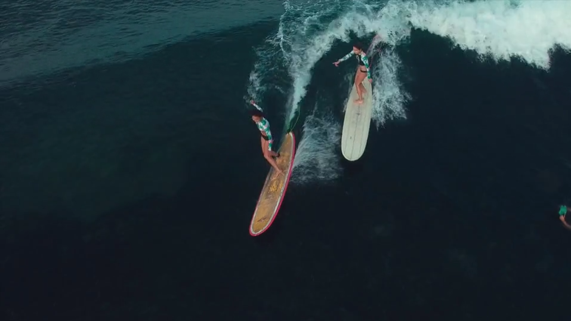

Lizzi's Surf Spots
For Knarly Lip Flips and Pitted Barrels

Hi! I’m Lizzi and I want to surf around the world. Here is my list of must-go locations:
Eisbach, Munich )
Baja Malibu, Baja Norte, Mexico)
Fulong Beach, Taiwan)
The Bubble, Fuerteventura, Canary Islands)
Black's Beach, San Diego, California)
Surf pool, United Arab Emirates)
Byron Bay, New South Wales, Australia)
Les Cavaliers, Anglet, France)
Sao Francisco do Sul, Brazil)
Riyuewan, Sanya, Hainan Island, China)
Supertubes, Jeffrey's Bay, South Africa)
I love challenge and adventure, the adrenaline from carving down a mountain of water is addictive so someday I want to also go to
These Locations!
But it will be awhile before I'll have the skills to go, so for now I'll have to be satisfied with my dream of going to the previous spots.